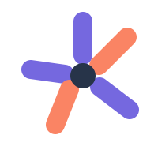
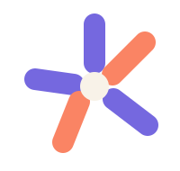

Jumbleyard · logo round two
Simple marks, fresh accent colors, and no filled logo tiles.
01 / Jolt JA loose J with a small spark: the simplest evolution of the brand initial.32px marks
02 / Jumble BurstA crooked five-part burst: quick, chaotic, and legible as a tiny app icon.32px marks

03 / Chaos GrinAn offbeat grin that gives the party game a recognizable character.32px marks